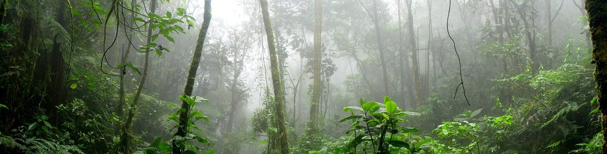

We want vibrant, healthy tropical forests. But how do we know if they really are? One way is to analyze satellite photos and essentially count trees. However, this tells us little about diversity of animal life hidden beneath the canopy. Another option is to set up cameras and look for wildlife directly. Yet this is a tough task, as most animals have evolved camouflage precisely to remain unseen.
Fortunately, most animals have also evolved to indicate their presence through sounds — to attract mates, warn rivals, or evade predators. This makes listening to a forest a powerful way to gauge its biodiversity.
Our goal is to teach AI to determine the biodiversity of an ecosystem by simply listening to it. To do this, experts must first create training examples: they listen to recordings and label which animal is making each sound. The more examples of each species, the better the AI can learn to recognize it.
The challenge is that this process is slow and labor-intensive. Experts need a trained ear to separate overlapping calls in dense soundscapes, often replaying recordings several times to identify each species correctly. On top of that, the data are unbalanced — some species are loud and constantly vocalize, while others are much quieter and sporadic.
We are developing novel techniques for the automatic detection, annotation, and classification of these soundscapes, using modern techniques like data augmentation, regularization, and contrastive learning.
| Publications |
|---|
| Y. Sun, T. Midori-Maeda, C. Solís-Lemus, D. Pimentel-Alarcón, and Zuzana Burivalova. "Classification of animal sounds in a hyperdiverse rainforest using convolutional neural networks with data augmentation.". Ecological Indicators. 2022. |